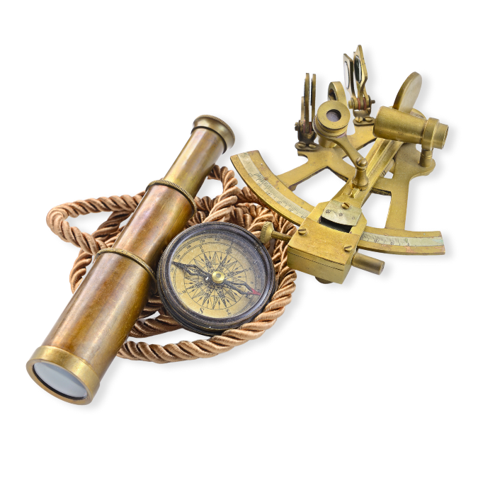
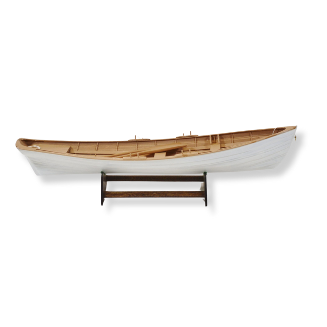
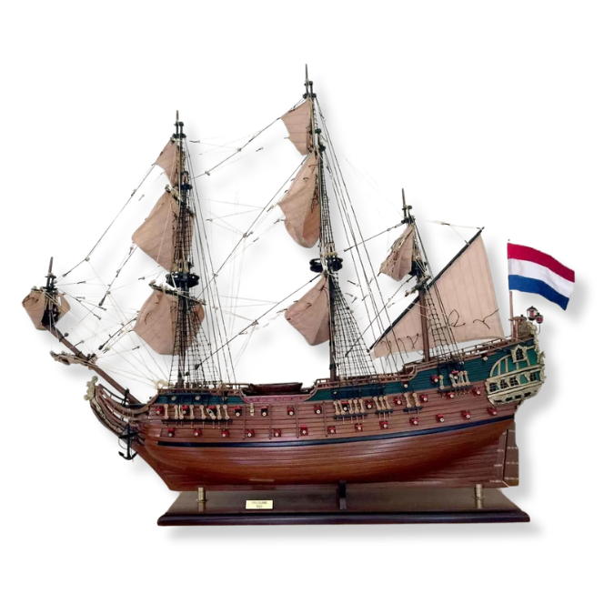
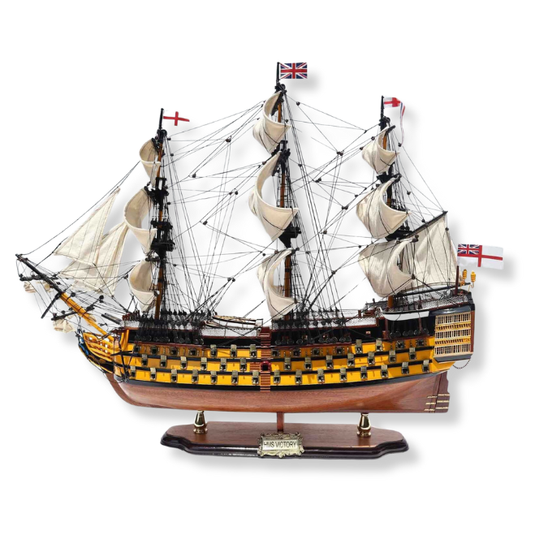

| Technical Skills | Soft Skills |
|---|---|
| Web & Software Development | Problem-solving & Critical Thinking |
| Graphics & UX/UI Design | Teachable & Self-learning |
| Illustration & Animation Video | Accountability & Time Management |
| Photography & Editing | Communication |
| Videography & Editing | Marketing |

Year 1996 - 2010
I was born in Cape Town in 1996 and attended Parow North Primary School until Grade 7 (Standard 5). I pursued sports such as Tennis, Rugby, Hockey, and Angling. I received awards like Junior Angling Champion and, in 2010, the Trophy for Gallantry.

Year 2011 - 2015
In 2011, I attended HTS Drostdy where I learned about computers and their growing impact on the world. In 2013, I transferred to Tygerberg High School to pursue a career in computers. This decision led me to discover my love for the arts, where I took an after-school subject in Illustration. I also played hockey and became a first-team player. In 2015, I graduated and earned my Matric Certificate.

Year 2016 - 2020
After finishing school, I took a gap year in 2016 to explore career options while working for Hillsong in production, where I learned Videography, Stage Management, and Sound Engineering. In 2017, I started an Adobe Photoshop course and joined a company called Nich Communications. In 2018, I expanded my skills in Photography, Cruise Ship Photography, and Photo Editing. While preparing for my first job on a cruise ship, I discovered that my disability limited my work options, leading me to reconsider this career path. I decided to work in an office environment and studied for my A+ in CompTIA to become an IT Technician. I worked for Incredible Connection until the COVID-19 pandemic began.

Year 2021 - 2024
During the pandemic, I realized that software development would be a more secure career choice, as my disability would not affect my work, even in a world shutdown. In 2021, I enrolled at Eduvos to study for an MLM in Software Development, where I learned languages like Java, C#, SQL, and Android. After graduating in 2022, I worked for companies like Jumping Fox Software, Jonker Voster Attorneys, and DevSavvy, helping them with marketing and hoping for a development role. In 2023, realizing they would not promote me, I joined another company in Cape Town where I developed websites, particularly for GIS. In 2024, I received a sponsorship to further my studies, and I am currently pursuing a Bachelor's degree in Web Design and Development at Stadio. My skills now include HTML, CSS, JavaScript, Java, Adobe Illustrator, InDesign, Photoshop, Dreamweaver, and Animate.